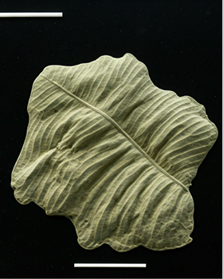

CONFIRMED SPECIMENCRAMBIDAE FAMILY
Rice Stem Borer
Scirpophaga incertulas
A primary pest in Asian rice ecosystems. Characterized by white to creamy yellow coloration. Larvae cause significant "deadheart" in young plants and "whitehead" during the reproductive stage by boring into the stem.